Prerequisite – Functional Dependencies
The term Armstrong axioms refers to the sound and complete set of inference rules or axioms, introduced by William W. Armstrong, that is used to test logical implication of functional dependencies. If F is a set of functional dependencies then the closure of F, denoted as  , is the set of all functional dependencies logically implied by F. Armstrong’s Axioms are a set of rules, that when applied repeatedly, generates a closure of functional dependencies.
, is the set of all functional dependencies logically implied by F. Armstrong’s Axioms are a set of rules, that when applied repeatedly, generates a closure of functional dependencies.
Axioms –
- Axiom of reflexivity – If 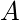 is a set of attributes and
 is subset of 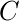, then holds . If 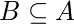 then
is subset of 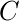, then holds . If 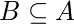 then  This property is trivial property.
This property is trivial property. - Axiom of augmentation – If 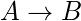 holds and
 is attribute set, then
is attribute set, then  also holds. That is adding attributes in dependencies, does not change the basic dependencies. If , then
also holds. That is adding attributes in dependencies, does not change the basic dependencies. If , then  for any .
for any . - Axiom of transitivity – Same as the transitive rule in algebra, if holds and 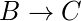 holds, then
 also holds. is called as functionally that determines . If
also holds. is called as functionally that determines . If  and 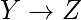, then 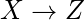
and 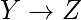, then 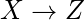
Secondary Rules –
These rules can be derived from the above axioms.
- Union – If holds and holds, then 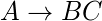 holds. If
 and then
and then 
- Composition – If and holds, then
 holds.
holds. - Decomposition – If holds then and hold. If then and
- Pseudo Transitivity – If holds and 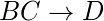 holds, then
 holds. If and 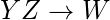 then
holds. If and 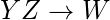 then  .
.
Why armstrong axioms refers to the Sound and Complete?
By sound, we mean that given a set of functional dependencies F specified on a relation schema R, any dependency that we can infer from F by using the primry rules of amrmstrong axioms holds in every relation state r of R that satisfies the dependencies in F.
By complete, we mean that using primary rules of amrstrong axioms repeatedly to infer dependencies until no more dependencies can be inferred results in the complete set of all possible dependencies that can be inferred from F.
References –
Armstrong’s axioms – Wikipedia
http://tinman.cs.gsu.edu